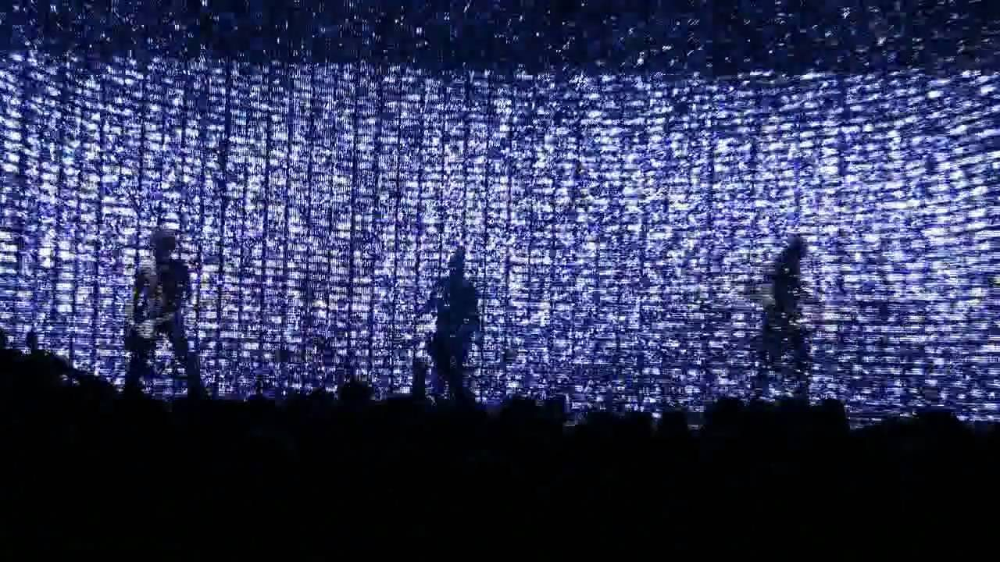

Nine Inch Nails @ The Hordern, Sydney (16/09/07)
{kind=link}

Everyone has their musical heroes that they idolised in their teenager years: there’s nothing wrong with looking back on those memories through rose-tinted glasses, but it’s even better when these ‘idols’ manage to keep up a consistent presence and turn out to be every bit as good as they used to be by the time you‘re all grown up. Luckily, this is most definitely the case with Nine Inch Nails and their revered frontman and mega-producer/multi-instrumentalist extraordinaire Trent Reznor. His masterpiece The Downward Spiral was a revelation to me as a 14-year old, satisfying my thirst for metal that was weighing heavily on me at the time but also representing somewhat of a turning point, which pushed me firmly in the direction of electronic music. And it was not long after that in ’95 when I caught their legendary live set at the one-off festival Alternative Nation, where witnessed a performance of such fury and intensity that it’s been was forever etched in my mind. Nothing could ever possibly match that. Except the Nine Inch Nails gig last Sunday night at the Hordern somehow managed to be nearly as good and in some ways, it was even better.
Quietly slipping into the venue at 9pm just as the band was hitting the stage, I was greeted with the opening sounds of Beginning Of The End, taken from their latest album Year Zero. It was that very album that proved to me Trent was here to stay and as the Nails ripped into their set, I was extremely satisfied to see this was reflected in their live show. As they started pumping out some of their back-catalogue classics like Heresy and The Wretched, tempered with bangin’ new tracks like Survivalism and The Good Soldier, what I was struck by was how tight it all sounded. It could well have been straight out of the studio: the live rock theatrics were just as bang on, as were all the electronic and synthesized sounds with neither swamping or cancelling each other out. It was the sound of true professionals who have most definitely honed their craft. What you’d expect after all, but every single one of the five members on stage went above and beyond the call of duty.
But as tight and impressive as this was, the show really stepped up a notch when they put the guitars and drums down to perform several of the electronic pieces from Year Zero including Me, I’m Not and The Great Destroyer. Consisting only of the supporting members behind their keyboards and Trent in front of an Apple Mac running what was probably Ableton Live, they began belting out what was basically the band’s signature screeching industrial noise (that Trent has always somehow managed to make melodic, of course). It was about then they dropped the LED visual strip screen, which rose and fell irregularly for the rest of the show. As the three members on stage stood behind their electronic devices, the visual screen switched from a background of flashing TV white noise to, with stunning effect, three wobbly green columns of light that towered behind each member on stage. It’s just something you had to be there to experience: coupled with the hectic electronic noise blaring out of the speakers and Trent’s impassioned vocals, the impact on the viewer was just mind boggling. Visceral and euphoric, it left my jaw hanging on the ground.
The remainder of the show returned to more of a live-rock focus than what we’d heard in this interlude, but the LED strip screen remained along with what was really a very impressive light show. Pyrotechnics do not maketh a live act, but coupled with an already intense and tight performance they really did elevate it to the next level. And if I had to put my finger on why it was so much better a performance than the last few times they’ve toured Australia, stretching back to their Big Day Out performance in 2000, I’d have to say it was for the same reason that Year Zero turned out to be such an excellent release. When I first heard about the whole ‘dystopian future’ concept the album was based on, alarm bells started ringing: all I could think of was ‘naffness’. But damn, it worked: it allowed Trent to get all political on our asses using the same lyrical punch that he’s always had a gift for, but for the very first time he was released from the shackles of having to pour out his angst and suffering for the whole world to see. This clearly reinvigorated his creativity and freed him up to approach his music in a different way, and this was reflected in the performance we saw last Sunday: certainly not the same anxious ball of furious angst that I saw in ’95, instead he was a little more detached from the emotion of it all but all the more refined because of it, giving himself over to the theatrical nature of what he was doing instead of pouring out his heart in a manner that was bound to get old and hackneyed sooner or later.
As much as Tent connected with the crowd in a way that was a lot more involving than his powerful but somewhat distant Sydney performance at the Hordern in 2005, there was still only one point where he chose to speak to the punters. But it certainly left quite an impact… For the third time in the last six months he took a swipe at his own record label Universal Music Australia, labeling them “greedy fucking assholes” for selling overpriced products, and he suggested that fans steal his new CD. “Steal it. Steal away. Steal, steal and steal some more and give it to all your friends and keep on stealing. Because one way or another these mother fuckers will get it through their head that they’re ripping people off and that’s not right.”
So how’s that for giving the finer to the man? It had the desired effect and left me pumping my fist in the air and bellowing in agreement, every bit the teenage fanboy that I was when I saw first them over a decade ago. So there you have it, Major record labels. You don’t fuck with the Trent!
The show ended with the NIN logo broadcast on the visual screens as the band left the stage and the lights went up, and I very nearly wept fanboy tears of joy. All in all, it was easily the best live gig I’ve seen all year, and it ranks right up there as my favourite of all time – right alongside my teenage festival experience back in ’95, be it rose-tinted glasses or not. Kurt Cobain may be dead, Billy Corgan may be irrelevant but it’s nice to know that Trent Reznor can always be relied on to bring the noise.